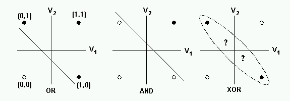
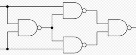
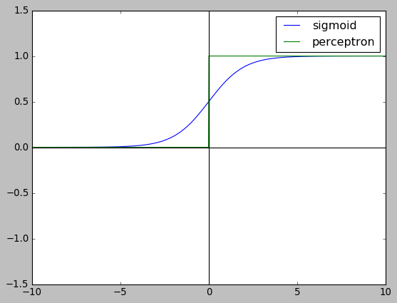
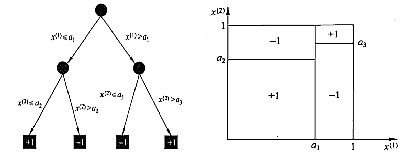
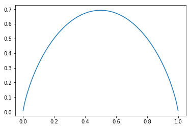
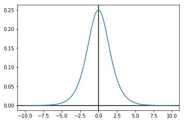
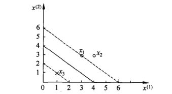
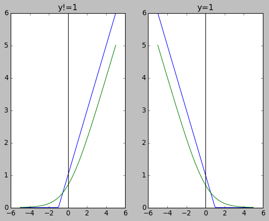
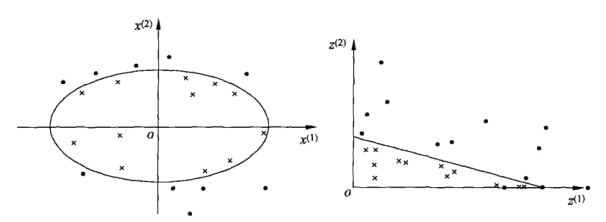
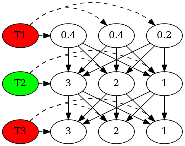

统计学习方法
Table of Contents
1. 统计学习方法
1.1. 概论
- 概率模型(P(y|x)与非概率模型 (y=f(x))
- 模型(线性, 概率…) + 策略 ( 损失函数, hypothesis func…)+算法 (sgd…)
- 过拟合测试时性能不好是因为训练数据中包含噪声
- regularization 是结构最小化的一种方法, 目的是使算法能选择结构最小化的模型, 符合 occam's razor 原则
- 生成模型与判别模型
- 生成模型学习 P(X,Y), 然后再利用条件概率推导出 P(Y|X) 进行分类
- 判别模型直接学习 P(Y|X)
- 生成模型学习到的是联合概率分布, 所以可以用来=生成=数据: 选择 P(X,Y) 较大的 值作为生成的数据, 较小的不考虑.
- 例如, X 包括 {高矮, 丑美, 贫富…}, Y 包含 {嫁/不嫁}, 如果学习到了P(X,Y), 我们可以选择一个 P(X,Y) 较大的数据, 并认为它是现实了可能存在的一个样本,例如 {高, 丑, 富 -> 嫁}. 但如果我们学习到的是 P(Y|X), 我们只知道 X 成立时 Y会成 立(例如 {高, 美,富 -> 嫁}), 但这个样本在现实中是否存在并不知道
- 分类器性能评价
accuracy
预测的正确率
precision
预测为正类的 case 中的正确率: 查准率
recall
实际为正类的 case 中的正确率: 查全率
P 和 R 没有直接关系但经常会相互制约
为了提高查全率, 算法会倾向于预测为真, 导致查准率下降为了提高查准率, 算法会倾向于预测为假, 导致查全率下降
F1
F1 是 P 和 R 的调和均值1
\(\frac{2}{F_1}=\frac{1}{P}+\frac{1}{R}\)
为什么需要 P 和 R
假设测试集中正例为 90%, 反例为 10%, 预测模型 A 预测的正确率是 70%, 另一个模型 B 简单的把所有样本都预测为正例, 所以它的正确率是 90%…那么对于这样正例很多的问题, 是否简单的都预测为正例就是好的模型?
对于模型 A, 有可能它预测为正类的都是对的, 但有些正类被预测为负类, 导致正确率不高, 但它的 P 却是 100%, 即模型 A 预测正类时比较保守. 相对来说, 模型 B 的 P 只有 90%. 所以如果现在的任务是`务必从测试集中选出一个正类`, 则模型 A 更好一些.
1.2. 感知机
- 感知机 (perceptron) 是 NN 和 SVM 的基础
- 把实例划分为正负两类的超平面, 实例的类别分别取 +1, -1, 假设函数为 \(\hat y=sign(wx+b)\)
损失函数
损失函数定义为误分类的点到超平面的几何距离之和, 即 \(-\frac{1}{||w||}\sum{y_i*(wx_i+b)}\).
对 \(w\) 和 \(b\) 进行等比例缩放时并不改变超平面的位置, 即最终 \(w\), \(b\) 会有无数多组解, 不妨选择 \(||w||=1\) 那个解
最终的损失函数 为 \(-\sum{y_i*(wx_i+b)}\) (针对误分类的点), 或者使用 hinge loss 表示: \(\sum{\max{(0,-y_i(wx_i+b))}}\) (针对所有的点)
单个 perceptron 无法解决异或问题, 因为它是一个线性模型.

多个 perceptron 构成网络后可以解决异或问题, 因为整个网络因为中间 perceptron 节点的 sign 函数变为非线性.
用一个 perceptron 可以实现 nand gate, 而多个 nand gate 组成网络后可以实现 xor gate

- 可以通过简单的变换把 perceptron 输出的范围从 (-1,+1) 变为 (0,1): 把之前的假设函数和损失函数中的 \(y\) 换成 \(2y-1\) 即可
使用 perceptron 可以构造网络, 但无法构造神经网络, 因为单个 perceptron 的输出是阶跃函数 (step function), 不适用于梯度下降. 在神经网络中, 基本单元是 sigmoid neuron, 它和perceptron 基本相同, 但输出换成为可导的 sigmoid 函数.
import numpy as np import matplotlib.pyplot as plt plt.style.use("classic") x = np.linspace(-10, 10, 1000) y1 = 1 / (1 + np.exp(-x)) y2 = (np.sign(x) + 1) / 2. plt.ylim(-1.5,1.5) plt.plot(x, y1,label="sigmoid") plt.plot(x, y2,label="perceptron") plt.axhline(0, color="black") plt.axvline(0, color="black") plt.legend() plt.show()

1.3. 朴素贝叶斯
1.3.1. 概率
条件概率公式
\(P(y|x)=\frac{P(y,x)}{P(x)}\)
全概率公式
\(P(x)=\sum_k{(P(x|y_k)*P(y_k))}\)
条件独立假设
\(P(x|y)=\prod_i{P(x_i|y)}\)
贝叶斯公式
\(P(y|x)=\frac{P(x|y)*P(y)}{P(x)}\)
1.3.2. 朴素贝叶斯方法
naive Bayesian 方法基于贝叶斯公式和条件独立假设, 其公式为:
- \(P(y_j|x)=\frac{P(x|y_j)*P(y_j)}{P(x)}\)
- \(P(x|y_j)\) 使用条件独立假设替换为 \(\prod_i{P(x_i|y_j)}\)
- \(P(x)\) 使用全概率公式替换为 \(\sum_k{(P(x|y_k)*P(y_k))}\)
- \(P(x|y_k)\) 使用条件独立假设替换为 \(\prod_i{P(x_i|y_k)}\)
最终的朴素贝叶斯方法的公式为:
\(P(y_j|x)=\frac{P(y_j)*\prod_i{P(x_i|y_j)}}{\sum_k{(P(y_k)*\prod_i{P(x_i|y_k))}}}\)
- 使用朴素贝叶斯方法分类时, 我们需要求的是 \(y=argmax_{y_j}(P(y_j|x))\), 即 给定 \(x\), 哪个 \(y_j\) 的概率最大?
1.3.3. 极大似然估计2
假设事件 A 发生的概率 P 未知, 通过 K+J 次伯努利实验, 发现 A 发生了 K次, 此事件服从二项分布, 其概率为 \(C_{K+J}^K P^K*(1-P)^{J}\), P 取多少时这个概率最大? 通过求导可以确认\(P=\frac{K}{K+J\) 时概率最大.
在朴素贝叶斯方法中, 学习意味着估计 \(P(y_j)\) 和 \(P(x_i|y_j)\)
\(P(y_j)\) 的极大似然估计为 \(\frac{\sum_{k=1}^N{I(y_j=y_k)}}{N}\)3
\(P(x_i|y_j)\) 的极大似然估计为 \(\frac{\sum_{k=1}^N{I(x_k=x_i, y_k=y_j)}}{\sum_{k=1}^N{I(y_k=y_j)}}\)
1.3.4. 为什么需要使用条件独立假设
若直接计算 \(P(x|y_k)\), 假设 x 包含 L 个 feature (\(x_1,x_2,\ldots x_S\)), 每个 \(x_i\) 有 \(S_i\) 种取值, 一共有\(\prod\limits_{i=1}^L{S_i}\) 中可能, 训练集的规模与这个相差很大,直接估计 \(P(x|y_k)\) 会不准确 (有可能都是 0)
同理, 我们无法直接估计 \(P(x,y_k)\)
1.3.5. 生成模型
朴素贝叶斯方法使用 \(P(Y|X)\) 来分类, 但它在前面已经得到了 \(P(X,Y)\),所以它是一种生成模型
1.3.6. 举例
| 1 | 2 | 3 | 4 | 5 | 6 | 7 | 8 | 9 | 10 | 11 | 12 | 13 | 14 | 15 | |
|---|---|---|---|---|---|---|---|---|---|---|---|---|---|---|---|
| x1 | 1 | 1 | 1 | 1 | 1 | 2 | 2 | 2 | 2 | 2 | 3 | 3 | 3 | 3 | 3 |
| x2 | S | M | M | S | S | S | M | M | L | L | L | M | M | L | L |
| Y | -1 | -1 | 1 | 1 | -1 | -1 | -1 | 1 | 1 | 1 | 1 | 1 | 1 | 1 | -1 |
x1=2, x2=S 时, Y=?
- 计算 \(P(x1=2,x2=S,y=1)\)
- \(P(y=1)=\frac{\sum_{k=1}^N{I(y_j=y_k)}}{N}=\frac{9}{15}\)
- \(P(x1=2,x2=S|y=1)=P(x1=2|y=1)*P(x2=S|y=1)=\frac{3}{9}*\frac{1}{9}=\frac{3}{81}\)
- \(P(x1=2,x2=S,y=1)=P(y=1)*P(x1=2,x2=S|y=1)=\frac{9}{15}*\frac{3}{81}=\frac{1}{45}\)
- 计算 \(P(x1=2,x2=S,y=-1)\)
- \(P(y=-1)=\frac{\sum_{k=1}^N{I(y_j=y_k)}}{N}=\frac{6}{15}\)
- \(P(x1=2,x2=S|y=-1)=P(x1=2|y=-1)*P(x2=S|y=-1)=\frac{2}{6}*\frac{3}{6}=\frac{1}{6}\)
- \(P(x1=2,x2=S,y=-1)=P(y=-1)*P(x1=2,x2=S|y=-1)=\frac{6}{15}*\frac{1}{6}=\frac{1}{15}\)
- 因为 \(P(x1=2,x2=S,y=-1) > P(x1=2,x2=S,y=1)\), 所以结果为 -1
1.3.7. 拉普拉斯平滑
使用极大似然估计时, 可能会因为训练集过小导致估计出的 \(P(x_i|y_j)\) 或\(P(y_j)\) 为 0, 可以通过加上一个小的系数避免这种情况,称为拉普拉斯平滑, 公式 为:
\(P(x_i|y_i)=\frac{\sum_{k=1}^N{I(x_k=x_i, y_k=y_j)}+1}{\sum_{k=1}^N{I(y_k=y_j)}+S_i}\),其中 \(S_i\) 表示 \(x_i\) 有 \(S_i\) 种 值
\(P(y_i)=\frac{\sum_{k=1}^N{I(y_j=y_k)}+1}{N+K}\), 其中 \(K\) 表示 \(y\) 为\(K\) 种值
1.3.8. 高斯朴素贝叶斯方法
当 x 是连续值时, 采用上述的方法会导致大量的 \(P(x_i|y_j)\) 为零(不做平滑时), 不能反映真实情况, 这时可以假设 \(P(x_i|y_j)\) 服从高斯分布, 通过样本计算出 \(\mu\) 和 \(\delta\),然后通过高斯分布的概率密度函数计算出 \(P(x_i|y_j)\)
1.4. 决策树
1.4.1. 决策树的表示
- 决策树的中间节点表示特征, 叶节点表示分类
由决策树根节点到叶结点的每一条路径构成一个=规则=,这些规则是=互斥且完备=的,即特征空间上的每个特征向量都对应且仅对应一条路径或规则. 另外, 可以把=规则=看成 特征空间上的一个=划分=, 这些=划分=是互斥且完备的

1.4.2. 决策树算法的三个过程:
- 特征选择
- 决策树生成
- 决策树剪枝
1.4.3. 特征选择
特征选择是为了提高决策树的学习效率: 每一个中间节点可以使用不同的特征进行分类, 选择哪一个特征最合适? 选择 信息增益大 的特征
1.4.4. 信息增益
熵
设 X 是一个离散随机变量, 其概率分布为 \(P(X=x_i)=p_i, i=1,2,\ldots,n\) X 的熵定义为 \(H(X)=-\sum\limits_1^n{p_i*\log{p_i}}\)
熵反映了随机变量的不确定性, 假设 X 服从 0-1 分布, \(H(X)=-p*\log{p}-(1-p)*\log{(1-p)}\) 随 p 变化的情况为:
%matplotlib inline import matplotlib.pyplot as plt import numpy as np x = np.linspace(0.001, 0.999, 100) y = -x * np.log(x) - (1 - x) * np.log(1 - x) plt.plot(x, y)
[<matplotlib.lines.Line2D at 0x7fc2f728e7f0>]

当 p=0 或 1 时, H(X)=0, X 完全没有不确定性, 当 p=0.5 时, X 的不确定性最大
条件熵
条件熵 \(H(Y|X)\) 定义为在 X 的条件下 Y 的不确定性: \(H(Y|X)=\sum_i{p_i*H(Y|x_i)}\), 其中 \(p_i=P(X=x_i)\)
信息增益
信息增益即 \(H(Y)-H(Y|X)\), 即已知 X 的情况下不确定性减少多少. 在选择特征时, 我们倾向于选择使得信息增益最大的, 或者说使条件熵最小的 X. 直观的理解是:
如果 $P(Y|x_i)$ 普遍都很大(或很小), 说明 X 可以很好的对 Y 进行区分, 而不是模棱两可的状态举例
年龄 工作 房子 信贷情况 可否贷款 青年 N N 一般 N 青年 N N 好 N 青年 Y N 好 Y 青年 Y Y 一般 Y 青年 N N 一般 N 中年 N N 一般 N 中年 N N 好 N 中年 Y Y 好 Y 中年 N Y 非常好 Y 中年 N Y 非常好 Y 老年 N Y 非常好 Y 老年 N Y 好 Y 老年 Y N 好 Y 老年 Y N 非常好 Y 老年 N N 一般 N \(H(Y)\)
\(P(Y=不贷款)=\frac{6}{15}\) \(P(Y=贷款)=\frac{9}{15}\)
\(H(Y)=-\frac{6}{15}*\log{\frac{6}{15}}-\frac{9}{15}*\log{\frac{9}{15}}\)
import numpy as np -6 / 15. * np.log2(6 / 15.) - 9 / 15. * np.log2(9 / 15.)
0.9709505944546686
\(H(Y|工作)\)
\(P(Y=贷款|有工作)=\frac{5}{5}\) \(P(Y=不贷款|有工作)=\frac{0}{5}\)
\(P(Y=贷款|没工作)=\frac{4}{10}\) \(P(Y=不贷款|没工作)=\frac{6}{10}\)
\(P(有工作)=\frac{5}{15}\) \(P(没工作)=\frac{10}{15}\)
\(H(Y|工作)=P(有工作)*H(Y|有工作)+P(没工作)*H(Y|没工作)\)
import numpy as np p_yy = 1 p_ny = 1 - p_yy p_yn = 0.4 p_nn = 1 - p_yn p_work = 5 / 15. p_nwork = 1 - p_work def entropy(*P): ret = 0 for p in P: if p!=0: ret += -p * np.log2(p) return ret H = p_work * entropy(p_yy, p_ny) + p_nwork * entropy(p_yn, p_nn) H
0.6473003963031124
\(H(Y|有房子)\) \(P(Y=贷款|有房子)=\frac{6}{6}\) \(P(Y=不贷款|有房子)=\frac{0}{6}\)
\(P(Y=贷款|没房子)=\frac{3}{9}\) \(P(Y=不贷款|没房子)=\frac{6}{9}\)
\(P(有房子)=\frac{6}{15}\) \(P(没房子)=\frac{9}{15}\)
import numpy as np p_yy = 1 p_ny = 1 - p_yy p_yn = 1/3. p_nn = 1 - p_yn p_house = 6 / 15. p_nhouse = 1 - p_house H = p_house * entropy(p_yy, p_ny) + p_nhouse * entropy(p_yn, p_nn) H
0.5509775004326937
可见`房子`的条件熵更小, 表示`是否有房子`确定后, `是否贷款`的不确定性更小,所以我们优先选择`房子`这个特征而不是`工作`这个特征
1.4.5. 决策树的生成: ID3 算法
ID3 算法根据 信息增益最大化 的原则选择特征, 递归的构造决策树.
ID3 算法主要逻辑是判断数据是否可分, 如果可分则根据信息增益最大化的原则选择一个特征,根据这个特征的取值个数把数据分为几类, 构造中间节点, 然后递归去分类. 如果不可分(所有数据都属于同一类, 或所有数据都有相同的特征, 或者增益过小…), 则不再分类, 构造叶节点, 且叶节点的类别由当前数据集中最多的那个类别决定
1.4.6. 决策树的剪枝
通过剪枝可以为了减少决策树的过拟合. 通过剪枝, 减少树的复杂度, 相当于结构最小化.
剪枝时自底向上的考查每一个中间节点: 把中间节点替换为叶节点, 并使用子树包含的D 中最多的类型做为叶节点的类别.然后在验证集上测试, 若准确率有提高, 则删除整个子树, 把中间节点替换为叶节点.
1.4.7. 为什么使用信息增益来选择
实际应用中, 决策树算法只会选择有限个信息增益最大的特征而不是使用所有特征, 原因有两个:
- 特征越多, 分析训练的时间越长. 树形结构决定了算法复杂度随特征的数目指数上升
- 特征越多, 模型越复杂, 越容易过拟合
所以决策树通过选择有限个 信息增益最大的特征 使得系统在保证复杂度较小的前提下达到系统熵较小
1.5. logistic 回归
1.5.1. logistic 分布
密度函数
\(f(x)=\frac{e^{-(x-\mu)/\lambda}}{\lambda*(1+e^{-(x-\mu)/\lambda})^2}\)
import numpy as np import matplotlib.pyplot as plt x = np.linspace(-10, 10, 10000) y = np.exp(-x) / np.power(1 + np.exp(-x), 2) plt.axhline(0, color="black") plt.axvline(0, color="black") plt.plot(x, y) plt.show()

分布函数
\(F(x)=\int\limits_{-\infty}^{x}f(x)dx=\frac{1}{1+e^{-(x-\mu)/\lambda}}\)
取 \(\mu=0\) 和 \(\lambda=1\) 时, \(F(x)\) 即常见的 sigmoid 函数 \(\frac{1}{1+e^{-x}}\)
import numpy as np import matplotlib.pyplot as plt plt.style.use("classic") x = np.linspace(-10, 10, 10000) y = 1 / (1 + np.exp(-x)) plt.axhline(0, color="black") plt.axvline(0, color="black") plt.plot(x, y) plt.show()

1.5.2. 二项 logistic 回归
用 \(P(Y|X)\) 表示, 其中 Y 的值为 1 或 0.
\(P(y=1|x)=\frac{1}{1+e^{-(wx+b)}}=\frac{e^{wx+b}}{1+e^{wx+b}}\)
上式也可以写作 \(\ln{\frac{P(y=1|x)}{1-P(y=1|x)}}=wx+b\), 其中 \(\ln{\frac{p}{1-p}}\) 称为对数几率 (log odds 或 logit)
1.5.3. 二项 logistic 回归的模型参数估计
设 \(P(y=1|x) = \pi(x)\), \(P(y=0|x)=1-\pi(x)\)
训练集中有 N 个样本 \((x_i,y_i)\), 使用 MLE (极大似然估计), 似然函数为:
\(L=\prod_{i=1}^N{\pi(x_i)^{y_i}*\big(1-\pi(x_i)\big)^{1-y_i}}\)
实际上它就是 N 个样本的联合概率
把 \(L\) 转换为最小化问题:
\(-\ln{L}=\sum_{i=1}^{N}{-y_i*\ln(\pi(x_i))-(1-y_i)*\big(\ln(1-\pi{(x_i))}\big)}\)
即 logistic 回归的交叉熵损失函数
1.6. 支持向量机
1.6.1. 拉格朗日乘子法
拉格朗日乘子法
拉格朗日乘子法(lagrange multiplier) 用来求解函数在约束条件下的极值问题.
例如, 求 \(f(x,y)=x^2y\) 的极值, 约束条件为 \(g(x,y)=x^2+y^2-1=0\)
一种方法是消元, 根据约束条件主把 \(x^2\) 替换为 \(1-y^2\) 后代入 \(f(x,y)\) 求极值. 但有时对于复杂的问题这种方法并不容易, 这时可以使用拉格朗日乘子法.
\(\phi(x,y,\lambda)=f(x,y)+\lambda g(x,y)\)
对 \(x\),\(y\),\(\lambda\) 求偏导:
\(\frac{\partial\phi}{\partial x}=2xy+2\lambda x=0\)
\(\frac{\partial\phi}{\partial y}=x^2+2\lambda y=0\)
\(\frac{\partial\phi}{\partial\lambda}=x^2+y^2-1=0\)
可得 \(x=\pm\frac{\sqrt{6}}{3}\), \(y=\pm\frac{\sqrt{3}}{3}\), \(\lambda=-y\) 时, \(f(x,y)\) 有极值
当存在多个约束条件 \(g(x,y)\), \(k(x,y)\) …时,
\(\phi(x,y,\lambda,\beta\,\ldots)=f(x,y)+\lambda g(x,y)+\beta k(x,y)+\ldots\)
不等式约束条件
上面提到的 \(g(x,y)\), \(k(x,y)\) 等都是等式约束, 如果约束条件变为 \(g(x,y)<=0\) 怎么办?
定义广义的拉格朗日函数:
\(l(x,\alpha,\beta)=f(x)+\sum_i{\alpha_i c_i(x)}+\sum_i{\beta_i h_i(x)}\)
其中 \(c_i(x)<=0\), \(h_i(x)=0\)
由于 \(c_i(x)\) 不是等式约束, 所以 \(f(x)\) 取得极值有两种情况:
- \(f(x)\) 的极值点位于\(c_i(x)\) 上, 即 \(c_i(x)=0\)
- \(f(x)\) 无约束的极值点本身就位于\(c_i(x)\) 内部, 即 \(c_i(x)\) 约束等于不存在, \(\alpha_i=0\)
综上, 符合以下条件时可以得到 \(f(x)\) 极值
- \(\frac{\partial l}{\partial x}=0\)
- \(h_i(x)=0\)
- \(\alpha_i c_i(x)=0\)
- \(\alpha_i \geqslant 0\)
上面的条件称为 kkt 条件 kkt
kkt 举例
\(f(p)=\sum_{i=1}^n{ln(1+\frac{p_i}{n_i})}\)
其中 \(\sum{p_i}<=p\), \(p_i>=0\)
\(l(p, \mu)=\sum_{i=1}^{n}ln(1+\frac{p_i}{n_i})+\mu_0(\sum_{i=1}^{n}{p_i}-p)+\sum_{i=1}^{n}{\mu_i(-p_i)}\)
\(\frac{\partial{l}}{\partial{p_i}}=\frac{1}{p_i+n_i}-\mu_0+\mu_i=0 \implies p_i+n_i=\frac{1}{\mu_0-\mu_i}\)
\(n_i>0\implies \mu_0>\mu_i \implies \mu_0>0 \implies P=\sum{p_i}\)
所以 \(p_i>0 \implies \mu_i=0 \implies p_i=\frac{1}{\mu_0}-n_i\)
再由 \(P=\sum{p_i}\), 得到 \(p_i\) 的值
- 拉格朗日对偶问题
1.6.2. 支持向量机
给定线性可分的的训练集 \(\{(x_i,y_i),\ldots \}\), \(y_i\in\{1,-1\}\) 通过 间隔最大化 学习到的超平面为 \(wx+b\), 相应的假设函数为 \(f(x)=sign(wx+b)\), 称为线性可分支持向量机或硬间隔支持向量机
1.6.3. 点到超平面的距离
考虑两个向量 \(\alpha,\beta\), \(\alpha\) 在 \(\beta\) 上的投影长度为 \(\frac{\alpha^T\times \beta}{||\beta||}\), 对于超平面 \(wx+b\), \(w\) 为法向量, 垂直于超平面, b 为截距, 所以点 \(x_i\) 到超平面的距离为 \(x_i\) 在 \(w\) 上的投影加上截距, 即 \(\gamma_i=\frac{wx_i}{||w||}+\frac{b}{||w||}\), \(\gamma_i\) 有正负之分, 表示 \(x_i\) 在平面的上方或是下方.
为了考虑分类正确与否, 我们把点到超平面的距离定义为:
\(\gamma_i=y_i*(\frac{wx_i}{||w||}+\frac{b}{||w||})\), 当 \(x_i\) 被正确分类时, \(\gamma_i\) 为正数, 否则为负数
1.6.4. 间隔最大化
定义 \(\gamma=min\gamma_i\), 所谓间隔最大化, 是为了使 \(\gamma\) 最大化
对于线性可分的训练数据, 可分离超平面有无穷多个(与感知机等价), 但间隔最大化的超平面是唯一的. 间隔最大化直观的解释是, 寻找间隔最大的超平面把数据分开, 意味着更大的确信度对数据分类. 即使对最难分的点, 也尽量把它们分开的足够远
- 寻找间隔最大超平面的问题可以表示为如下的带约束的最优化问题:
- 约束为 \(\gamma_i \geqslant \gamma\), 即所有点到超平面的距离都大于等于 \(\gamma\)
- 最大化 \(\gamma\)
- 记 \(\gamma\) 的分子部分 \(y_i*(wx_i+b)\) 为 \(\hat{\gamma}\), 则问题变为:
- 最大化 \(\frac{\hat{\gamma}}{||w||}\)
- 约束为 \(y_i*(wx_i+b) \geqslant \hat{\gamma}\)
假设该最优化问题的解为 \(\{\hat w, \hat b\}\), 则把 \(\{\hat w, \hat b\}\) 任意等比例缩放为 \(\{\lambda \hat w, \lambda \hat b\}\) 时, 原问题不变.
所以原问题可以变为:
- 最大化 \(\frac{1}{||w||}\)
- 约束为 \(y_i*(wx_i+b) -1 \geqslant 0\)
- 为计算方便, \(||w||\) 可以替换为 \(w^2\), 硬间隔支持向量机最终的优化问题是:
- 最小化 \(\frac{1}{2}w^2\)
- 约束为 \(1-y_i*(wx_i+b) \leqslant 0\)
1.6.5. 支持向量
训练集样本点中与超平面最近的点称为支持向量, 这些点使得约束 \(y_i*(wx_i+b)-1=0\) 成立, 它们到超平面的距离为 \(\frac{1}{||w||}\)
1.6.6. 使用拉格朗日乘子法求解间隔最大化问题
假设训练集只有两个点, 正例为 \(x_1=(3,3)\), 反例为 \(x_3=(1,1)\), 求最大分隔超平面

- 最小化 \(\frac{1}{2}(w_1^2+w_2^2)\)
- 约束条件为:
- \(w_1*3+w_2*3+b-1 \geqslant 0\)
- \(-w_1*1-w_2*1-b-1 \geqslant 0\)
\(L(x, \alpha, \beta)=\frac{1}{2}(w_1^2+w_2^2)+\alpha (1-b-3w_1-3w_2)+\beta (1+b+w_1+w_2)\)
kkt 条件为:
- \(\alpha \geqslant 0\)
- \(\beta \geqslant 0\)
- \(\alpha (1-b-3w_1-3w_2)=0\)
- \(\beta(1+b+w_1+w_2)=0\)
先求偏导得到
\(w_1-3\alpha+\beta=0\), \(w_2-3\alpha+\beta=0\), \(\alpha=\beta, w_1=w_2\)
有四种情况需要考虑, 但只下下面一种是可行的:
\(1-b-3w_1-3w_2=0, 1+b+w_1+w_2=0, \alpha \neq 0, \beta \neq 0\)
可得: \(w_1=w_2=\frac{1}{2}, b=-2\)
1.6.7. 使用梯度下降求解间隔最大化问题
约束条件可以使用 hinge loss 表示为惩罚项, 例如:
约束条件为 \(1-y_i(wx_i+b) \leqslant 0\), 我们可以使用 \(hinge\_loss(1-y_i(wx_i+b)\) 表示惩罚项, 其中 \(hinge\_loss(x)=\max(0,x)\)
因此间隔最大化问题可以表示为
\(loss=\frac{1}{2}w^2+\sum hinge\_loss\big(1-y_i(wx_i+b)\big)\)
1.6.8. 软间隔支持向量机
有时数据并非完全可分的, 或者我们允许超平面把测试集中的某些正例分类为反例, 以得于更大的间隔. 从损失函数的角度考虑, 可以认为把损失函数的惩罚项乘上一个系数 C, 变为
\(loss=\frac{1}{2}w^2+C*\sum hinge\_loss\big(1-y_i(wx_i+b)\big)\),
当 \(C\) 较大时, 表示我们希望超平面分类需要尽量正确, 当 \(C\) 较小时, 表示我们希望间隔足够大
上面的 loss 还可以改写成
\(loss=\frac{\lambda}{2}w^2+\sum hinge\_loss\big(1-y_i(wx_i+b)\big)\)
所以 支持向量机本质上就是一个带 L2-norm 的感知机
1.6.9. 支持向量机与 logistic 回归
logistic 回归的 loss 为:
\(loss = \frac{\lambda}{2}w^2+\sum -y_i\log(p_i)-(1-y_i)\log(1-p_i)\)
其中 \(p_i=\frac{1}{1+e^{-(wx_i+b)})}\), \(y_i \in \{1,0\}\)
- 当 \(y_i\) 为 0 时, logistic loss 后半部分为 \(-\log(1-\frac{1}{1+e^{-(wx_i+b)}})\)
- 当\(y_i\) 为 -1 时, 支持向量机的 loss 的后半部分为 \(\max(0,1+(wx_i+b))\)
- 当 \(y_i\) 为 1 时, logistic loss 后半部分为 \(-\log(\frac{1}{1+e^{-(wx_i+b)}})\)
当 \(y_i\) 为 1 时, 支持向量机的 loss 的后半部分为 \(\max(0,1-(wx_i+b))\)
import numpy as np import matplotlib.pyplot as plt plt.style.use("classic") plt.subplot(121) x = np.linspace(-5, 5, 100) y1 = np.maximum(0, 1 + x) y2 = -np.log(1 - 1 / (1 + np.exp (-x))) plt.plot(x, y1, x, y2) plt.title("y!=1") plt.axhline(0, color="black") plt.axvline(0, color="black") plt.subplot(122) y1 = np.maximum(0, 1 - x) y2 = -np.log(1 / (1 + np.exp (-x))) plt.plot(x,y1,x,y2) plt.title("y=1") plt.axhline(0, color="black") plt.axvline(0, color="black") plt.show()

1.6.10. 非线性支持向量机
有些问题无法找到一个超平面把正反例分开. 例如:

左边显示的数据中正例集中在一个椭圆内, 无法找到一个超平面把正反例分开. 这里就需要非线性支持向量机.
非线性支持向量机的思想是把原空间的数据通过一个变换映射到新的空间, 变换后的数据在新空间就有可能是线性可分的了.
上图左边显示的空间 \(\chi \subset R^2\) , \(x=(x^{(1)},x^{(2)}) \in \chi\).
定义映射函数 \(z=\phi(x)=((x^{(1)})^2,(x^{(2)})^2)\) 把 \(\chi\) 映射到上图右边显示的空间 \(Z \subset R^2\), \(z=(z^{(1)},z^{(2)}) \in Z\)
原空间 \(\chi\) 中的椭圆 \(w_1 (x^{(1)})^2+w_2 (x^{(2)})^2+b=0\) 变换为新空间中的直线 \(w_1 z^{(1)}+w_2 z^{(2)}+b=0\)
这样原空间的非线性可分问题就变成了新空间的线性可分问题.
1.6.11. 对偶问题
原始问题 \(loss=\frac{1}{2}w^2+\sum hinge\_loss\big(1-y_i(wx_i+b)\big)\), 令 \(w=a\cdot x=\sum_j^N \alpha_j x_j\), 即 \(w\) 是 \(x\) 的加权和. 所以\(w\cdot x_i = \alpha \cdot x \cdot x_i\), 把 \(\alpha\) 看作 \(w^{\ast}\), \(x \cdot x_i\) 看作 \(x^{\ast}\), 构成对偶问题, \(w^{\ast}\) 和 \(x^{\ast}\) 的 shape 均变为 \(N*N\)
\(x_i \cdot x\) 反映了原问题中第 i 个样本的特征向量与其它所有样本的特征向量的相似性.
对偶问题把原始的特征向量替换为原始特征向量与其它所有样本的特征向量的相似性, 但原问题不是线性可分时, 对偶问题同样不是线性可分的.
1.6.12. 核函数
核函数 \(K(x_i,x_j)\) 表示原问题的两个样本的特征向量被映射到高维空间后的点积, 即 \(\phi(x_i)\cdot\phi(x_j)\)
正常情况下, 我们要解决非线性支持向量机问题时, 需要确定 \(\phi(x)\), 然后把 \(x\) 通过 \(\phi(x)\) 映射后代入原问题或对偶问题中求解. 但 \(\phi(x)\) 如何确定? 新空间的维度直觉上越高越有可能线性可分, 但维度越高计算量越大…
核函数并没有给定 \(\phi(x)\), 而是直接给出了 \(\phi(x)\cdot\phi(x)\) 的值, 从而避免高维空间上的点积计算, 因为对偶问题不需要单独计算\(\phi(x)\), 它只需要计算点积.
以高斯核为例, \(K(x_i,x_j)=exp(-\frac{||x_i-x_j||^2}{2\delta^2})\), 根据泰勒级数展开, 它对应的 \(\phi(x)\) 有无穷维4 , 但我们在低维空间通过高斯核函数就能计算出超高维空间里对应的两个向量的点积.
除了高斯核, 还有:
- 多项式核 \(K(x_i,x_j)=(x_i\cdot x_j+1)^p\), 与非线性 logistic 回归时使用 polynomial feature 类似?
- 线性核 \(K(x_i,x_j)=x_i\cdot x_j\), 线性核相当于没有作映射, 可以用来解决本来就线性可分的问题.
1.6.13. SMO 算法
1.7. 隐马尔可夫模型
1.7.1. 定义
隐马尔可夫模型(HMM, Hidden Markov Model) 是关于序列的概率模型, 描述一个由隐藏的马尔可夫链生成一个隐藏的状态序列, 然后再由隐藏状态序列生成观测序列的过程.
HMM 由初始状态分布, 状态转移概率分布和观测概率分布确定. 其形式定义如下:
- Q 是所有状态的集合, \(Q=\{q_1,q_2,\ldots, q_N\}\)
- V 是所有观测的集合, \(V=\{v_1,v_2,\ldots,v_M\}\)
- I 是长度为 T 的状态序列, \(I=\{i_1,i_2,\ldots,i_T\}\)
- O 为对应的观测序列, \(O=\{o_1,o_2,\ldots,o_T\}\)
- A 为状态转移矩阵, \(A=\big[a_{ij}\big]_{N\times N}\), \(a_{ij}\) 表示状态由 \(q_i\) 转移到 \(q_j\) 的概率
- B 为观测概率矩阵, \(B=\big[ b_j(k)\big]_{N\times M}\), 表示状态为 \(q_j\) 的条件下观测结果为 \(v_k\) 的概率
- \(\pi\) 是初始状态分布, \(\pi_i=P(i_1=q_i)\)
- HMM 由 A, B 和 \(\pi\) 决定, \(\lambda=(A,B,\pi)\)
- HMM 假设任意时刻 t 的状态 \(i_t\) 只由前一时刻的 \(i_{t-1}\) 决定, 与其它时刻无关
- HMM 假设任意时刻 t 的观察 \(o_t\) 只与 \(i_t\) 有关
1.7.2. 举例
假设有 4 个盒子, 每个盒子有红白两种球, 个数如下:
| 盒子 | 1 | 2 | 3 | 4 |
|---|---|---|---|---|
| 红球数 | 5 | 3 | 6 | 8 |
| 白球数 | 5 | 7 | 4 | 2 |
以如下方法产生一个观测序列:
- 初始时以等概率从四个盒子中选一个, 然后从选中的盒子中随机选一个球, 记录后放回
- 从当前盒子转移到下一下盒子, 方法如下: 若当前是盒子1, 则转移到盒子2. 若 2 或 3, 则以 0.4 和 0.6 的概率转移到左边或右边的盒子. 若 4, 则以 0.5 和 0.5 的概率停留在 4 或转移到 3
- 转移到下一个盒子后从盒子随机选一个球, 记录后放回, 重复 5 次, 假设得到的观测序列为 {红,红,白,白,红}
- 整个过程中观察者无法看到盒子的序列
上面的例子中:
- Q = {盒子1,盒子2,盒子3,盒子4}
- V = {红球,白球}
- O = {红,红,白,白,红}
- \(\pi=\begin{bmatrix}0.25&0.25&0.25&0.25\end{bmatrix}\)
- \(A=\begin{bmatrix} 0&1&0&0\\0.4&0&0.6&0\\0&0.4&0&0.6\\0&0&0.5&0.5\end{bmatrix}\)
- \(B=\begin{bmatrix}0.5&0.5\\0.3&0.7\\0.6&0.4\\0.8&0.2\end{bmatrix}\)
1.7.3. 概率计算问题
给定模型 \(\lambda=(A, B,\pi)\) 和观测序列 \(O=\{o_1,o_2,\ldots,o_T\}\), 计算 \(O\) 出现的概率
直接计算
根据全概率率公式: \(P(O)=\sum{_I}P(O|I)P(I)\), 因为一共有 \(N^T\) 种 I 序列, 所以复杂度为 \(\mathcal{O}(TN^T)\)
前向算法
前向算法的思想是, 若已知 \(\alpha_t=P(o_1,o_2,\ldots, o_{t})\) , 如何求 \(\alpha_{t+1}=P(o_1,o2,\ldots,o_{t},o_{t+1})\) ?
由于在 t 时刻时 \(i_t\) 可能是 \(\{q_1,q_2,\ldots,q_N\}\) 中的任一个, 所以定义 \(\alpha_t(i) = P(o_1,o_2,\ldots,o_t|i_t=q_i)\)
- 前向算法
- 初始值 \(\alpha_1(i)=\pi_i b_i(o_1)\)
- \(\alpha\) 的递推公式为 \(\alpha_{t+1}{i}=\big(\sum{\alpha_t(j)a_{ji}\big)b_i(o_{t+1})\)
- 输出 \(P(O)=\sum_{i=1}^N{\alpha_T(i)}\)
复杂度
前向算法的复杂度是 \(\mathcal{O}(N^2 T)\), 因为算法一共递推 \(T\) 次, 每次需要计算每个状态向其它 N 个状态转移时的概率,复杂度为 \(\mathcal{O}(N^2)\)
- 前向算法
1.7.4. 学习问题
给定转移序列 \(I\) 和观测序列 \(O\), 计算 \(A,B,\pi\)
有足够多的标记信息时, 可以使用 MLE (极大似然估计) 来估计 HMM 的参数
- 设样本中状态 i 转移到状态 j 的样本数为 \(A_{ij}\), 则 \(\hat{a}_{ij}= \frac{A_{ij}}{\sum_k{A_{ik}}}\)
- 设样本中状态为 j 且观测为 k 的样本数为 \(B_{jk}\), 则 \(\hat{b}_{j}(k)=\frac{B_{jk}}{\sum_i{B_{ji}}}\)
- \(\hat{\pi}_i\) 为样本中初始状态为 \(q_i\) 的频率
1.7.5. 解码问题
给定 \(\lambda\) 和 \(O\), 计算 \(O\) 最有可能对应的 \(I\)
直接计算
穷举所有的 \(I\), 选择使得 \(P(O|I)\) 最大的 \(I\)
维特比算法
维特比算法是一个基本的动态规则算法5
引入一个 \(\delta_t(i)\) 保存 t 时刻状态为 i 的所有路径中概率的最大值
- 输出为 \(P=\max_{i=1}^N{\delta_T(i)}\)
- 递推公式为 \(\delta_{t+1}(i)=\max_{j=1}^{N}[\delta_t(j)a_{ji}]b_i(o_{t+1})\)
算法与概率计算的前向算法类似, 复杂度为 \(\mathcal{O}(N^2 T)\)
举例
给定一个模型 \(\lambda = (A,B,\pi)\), 其中:
\(A=\begin{bmatrix}0.5&0.2&0.3\\0.3&0.5&0.2\\0.2&0.3&0.5\end{bmatrix}\)
\(B=\begin{bmatrix}0.5&0.5\\0.4&0.6\\0.7&0.3\end{bmatrix}\)
\(\pi=\begin{bmatrix}0.2&0.4&0.4\end{bmatrix}\)
已知观测序列为 {红， 绿， 红}， 求最优状态序列 I
虚线表示观测概率, 实线表示转移概率

\(\delta_1(1)=0.1\) \(\delta_1(2)=0.16\) \(\delta_1(3)=0.28\)
\(\delta_2(1)=\max(0.1*0.5,0.16*0.3,\underline{0.28*0.2})*0.5=0.028\) \(\delta_2(2)=\max(0.1*0.2,0.16*0.5,\underline{0.28*0.3})*0.6=0.0504\) \(\delta_2(3)=\max(0.1*0.3,0.16*0.2,\underline{0.28*0.5})*0.3=0.042\)
\(\delta_3(1)=\max(0.028*0.5,\underline{0.0504*0.3},0.042*0.2)*0.5=0.00756\) \(\delta_3(2)=\max(0.028*0.2,\underline{0.0504*0.5},0.042*0.3)*0.4=0.01008\) \(\delta_3(3)=\max(0.028*0.3,0.0504*0.2,\underline{0.042*0.521})*0.7=0.0147\)
import numpy as np A = np.array([[.5, .2, .3], [.3, .5, .2], [.2, .3, .5]]) B = np.array([[.5, .5], [.4, .6], [.7,.3]]) pi = np.array([[.2, .4, .4]]) delta_1 = pi * B[:, 0] delta_2 = delta_1.T * A * B[:, 1] delta_2 = np.max(delta_2, axis=0) delta_3 = delta_2.T * A * B[:, 0] delta_3 = np.max(delta_3, axis=0) (delta_1, delta_2, delta_3)
(array([[0.1 , 0.16, 0.28]]), array([0.028 , 0.0504, 0.042 ]), array([0.007 , 0.01008, 0.0147 ]))
最终求得的最大概率为 0.0147， 对应于 \(3-3-3\) 这条路径, 所以最优状态序列为 \(I=(i_3,i_3,i_3)\)
1.7.6. 应用举例: 词性标注
应用 HMM 进行预测时， 输入信息做为观测序列 \(O\), 预测结果做为状态序列 \(I\), 我们需要先用学习算法学习到 HMM 的参数 \(A,B,\pi\), 然后应用维特比算法计算出对应于输入信息 \(O\) 的最可能的预测结果 \(I\)
以词性标注问题为例:
- \(Q\) 是所有的词性组成的集合, {v,n,vt,a,ad,…}
- \(V\) 是所有单词组成的集合， {我,你,可是,如果,…}
- \(O\) 是一句话， 例如 {结合， 成， 分子，时}
\(A\) 是状态转移矩阵, 通过学习获得, 例如
v n p … v 0.1 0.8 0.1 n 0.8 0.01 0.19 p 0.9 0.05 0.05 …
\(B\) 是观测概率矩阵，通过学习获得, 例如
结合 我 是 v 0.2 0.001 0.001 … - \(\pi\) 是初始状态分布, 通过学习获得
通过以上信息应用维特比算法计算 I={结合, 成, 分子, 时} 对应的 O, 即为对应的词性.
1.7.7. 应用举例: 拼音输入法6
输入的拼音例如 {bu zhi dao} 做为观测序列， 预测结果例如 {不 知 道} 做为状态序列.
- \(Q\) 是所有的汉字组成的集合
- \(V\) 是所有拼音组成的集合
- \(O\) 是一段拼音
\(A\) 是状态转移矩阵, 通过学习获得, 例如
个 些 会 … 一 0.8 0.7 0.6 …
\(B\) 是观测概率矩阵，通过学习获得, 例如
he hu ha 和 0.9 0.1 0 …
Footnotes:
调和均值即倒数均值, 例如两个电阻并联后的总电阻是两个电阻的调和均值 如何理解与应用调和平均数？
SVM中，高斯核为什么会把原始维度映射到无穷多维？https://www.zhihu.com/question/35602879/answer/63963315

{kind=link}
{kind=link}